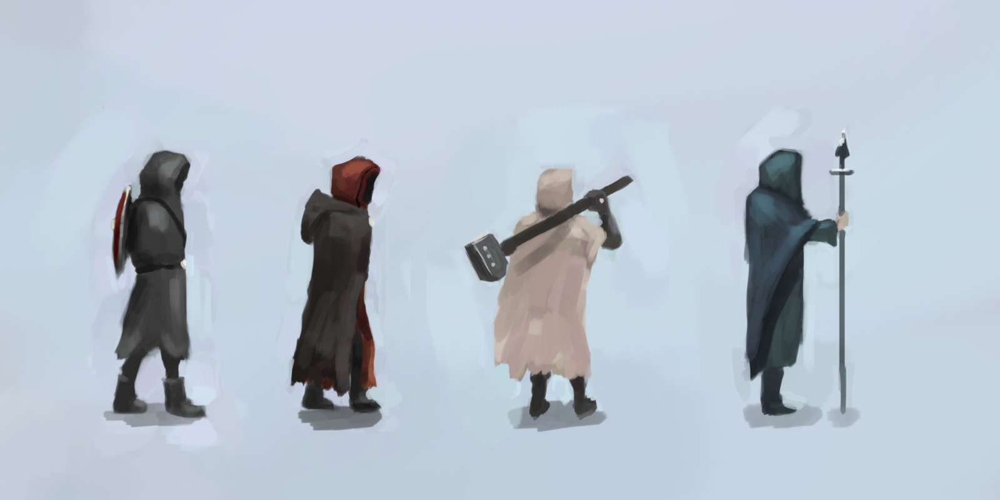
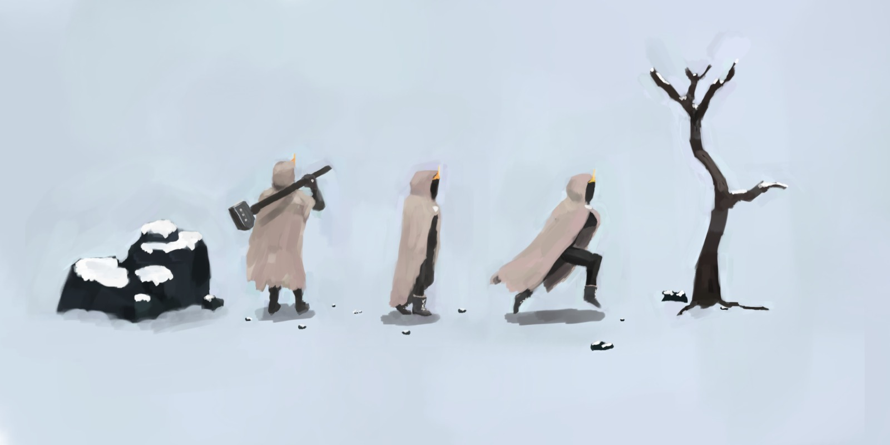
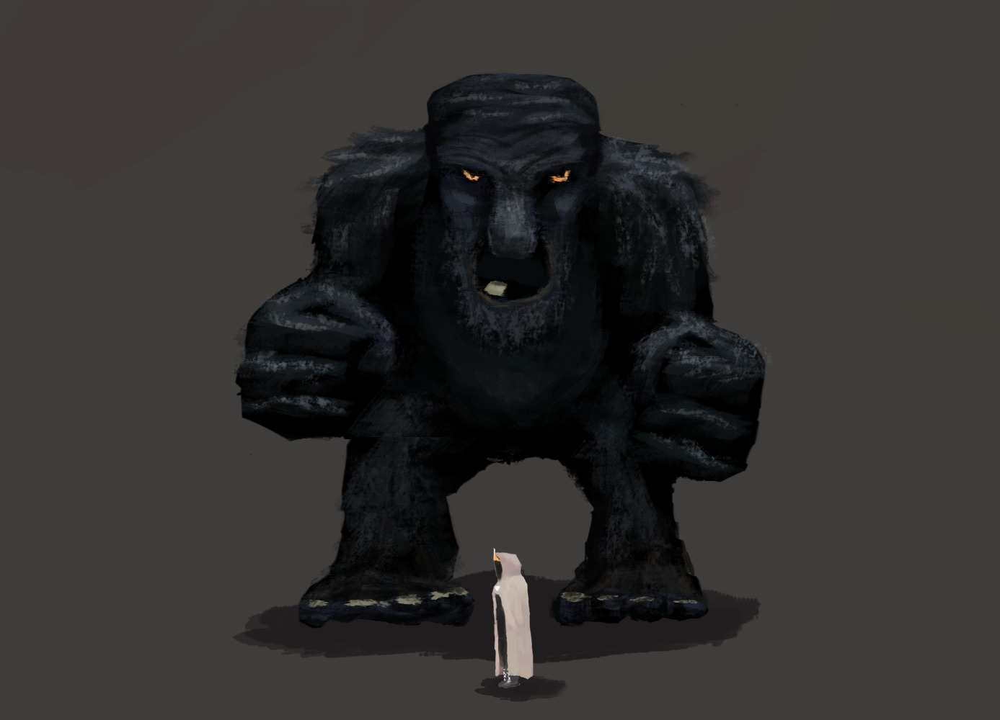

This game was originally created for the "Icehouse Jam" on itch.io with the main topic being "Myths and Legends". The secondary topic is "Far away and lost". We started on the 8. November and had to be finished on the 30. November, which gave us around 3 weeks of development. Our team consisted of 2 programmers and 1 audio designer. On this project I decided to create the art for it as well, so I acted as a coder and an artist.
The first thing that came to our mind when we heard "Myths and Legends" were of course the real world legends of old, one of them being the norse mythology. We sat together and started brainstorming and we quickly had the idea of creating a 2D-Platformer where you get lost in the world and have to find the boss. Getting lost is achieved by having multiple layers of the world, which the player seemlessly travels through. This means that you could be at the same X & Y Position of the world but find yourself in a completely different place. So far we haven't really tested it but the technical side of things already works flawlessly. The boss fight is supposed to be a huge troll, which lives on the top of a mountain.
This already gets us to the setting and style of the game. Since the game is meant to be set around the norse mythology we decided to put our world on a snowy mountain, with sheer cliffs and big rocks everywhere. This adds to the impression of being lost and somewhere far away. We originally set out to create a game which looks a little bit like concept art or watercolors, but since we don't have a proper artist this was very hard or even impossible to achieve. The result still looks quite nice I think. To get to this I first started to draw some sketches of possible characters and then refining the design once we settled for one.
 After this was done we started creating a playable prototype including the movement through the world and a first draft of the boss fight. The movement was rather easy to get down, since I have done many small platformer games in my own time, but this time I decided to handle all of the physics myself, which gave us more control over the movement. One of the harder things was getting the boss fight to work, since we all have never done anything like it. The design of the boss looks like this:
In the end the boss fight was quite enjoyable but of course could have received some more love if this was an actual game. It had 3 different attacks and reacted in a somewhat intelligent way. What I mean by that is that it didn't just randomly punch in a direction, but it rather tried to actually hit the player. This meant that it would also have to be able to walk/jump into the direction of the player. We ended up using the Unity animation events to accomplish a smarter integration of the logic into the animations. Once you had defeated the boss, we had one final surprise up our sleeves but to see what it is you will have to play it yourself.
You can do so at: https://blacklock.itch.io/valhalla

Something we were all really proud of was the atmosphere of the game. We were think that we were able to capture the feeling of being lost in a distant place, of being lost in the cold. The biggest part in creating this atmosphere were definitely the sound effects and the ambience in form of very subtle wind chimes and flutes. For the boss fight we had another piece of music specifically for it, which capture the intensity of the moment very well.
In the end I think we were all really happy with the result and were rewarded by placing 4th out of over 20 games. Since we were very satisfied with what we had accomplished but felt that there is a lot more to the basic game than that, we decided to keep working on it in our freetime.